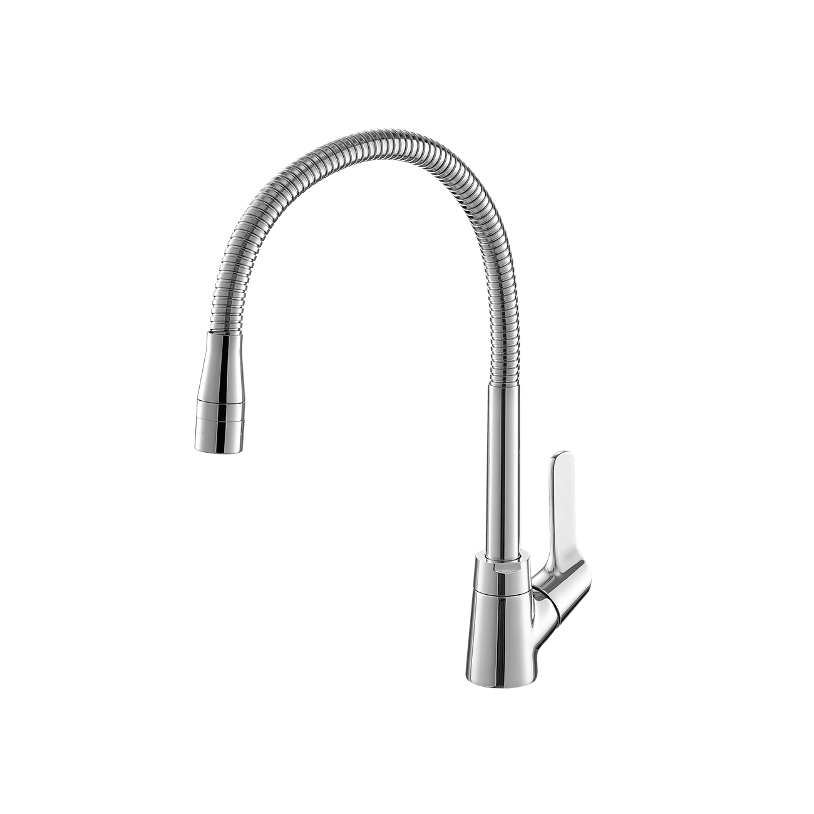
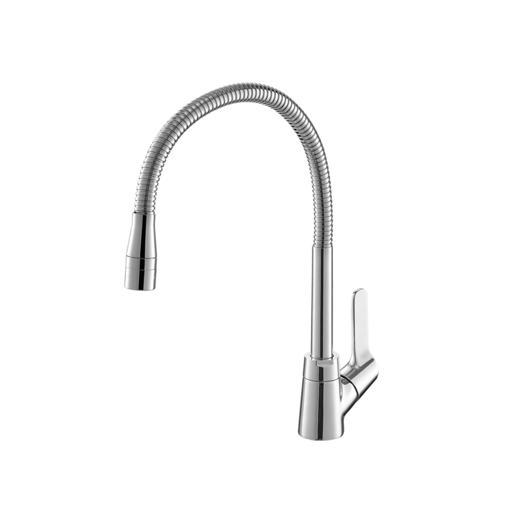

Vòi bếp SFV-18 là dòng vòi nước lạnh cao cấp, kết hợp giữa thiết kế linh hoạt và chất liệu bền bỉ, mang lại sự tiện nghi tối đa cho không gian bếp hiện đại. Sản phẩm được sản xuất trên dây chuyền công nghệ hiện đại của Nhật Bản, đảm bảo các tiêu chuẩn khắt khe về chất lượng.Ưu điểm của vòi bếp SFV-18Thiết kế cần mềm linh hoạt và tiện dụngVòi bếp SFV-18 có thiết kế cần mềm độc đáo, cho phép người dùng uốn cong hoặc điều chỉnh độ cao theo nhu cầu sử dụng cụ thể.Cần vòi có thể quay trái hoặc quay phải một cách dễ dàng, giúp dòng nước chạm đến mọi ngóc ngách trong bồn rửa, hỗ trợ việc làm sạch hiệu quả hơn.Sản phẩm có thông số kỹ thuật gọn gàng với chiều cao 371mm và chiều rộng 231mm, phù hợp với nhiều loại chậu rửa bát khác nhau.Hai chế độ xả nước thông minhĐầu vòi bếp SFV-18 được tích hợp 2 chế độ phun nước riêng biệt, có thể thay đổi linh hoạt tùy theo mục đích sử dụng:Chế độ phun mưa: Tạo ra dòng nước êm ái, lý tưởng để rửa rau củ, thực phẩm mà không làm dập nát.Chế độ phun mạnh: Tạo áp lực nước tập trung, giúp cọ rửa bồn rửa bát hoặc đánh bay các vết bẩn cứng đầu một cách nhanh chóng.Chất liệu đồng thau và lớp mạ Crom/Niken bền đẹpĐược chế tác từ chất liệu đồng thau nguyên khối, vòi SFV-18 có kết cấu vững vàng, chịu lực và chịu nhiệt tốt. Bề mặt được phủ lớp mạ sáng bóng, không chỉ tạo nên vẻ sang trọng, đồng bộ cho gian bếp mà còn giúp sản phẩm chống gỉ sét và bền đẹp theo thời gian.Để giữ cho lớp mạ sản phẩm luôn sáng bóng, người dùng tuyệt đối không nên vệ sinh sản phẩm bằng các chất tẩy rửa có tính axit mạnh.Nhìn chung, vòi rửa bát INAX SFV-18 lạnh không chỉ đáp ứng tốt nhu cầu sử dụng hằng ngày mà còn là điểm nhấn thẩm mỹ, mang lại sự hài lòng và trải nghiệm sử dụng hoàn hảo cho gia đình.Video giới thiệu về vòi bếp INAXThông số kỹ thuậtMã sản phẩmSFV-18Loại vòiVòi rửa bát lạnh (1 chế độ nước) / Vòi rửa chén cần ngỗngKích thước (Cao x Rộng)371 x 231 (mm)Thương hiệuINAXChất liệuThân vòi bằng Đồng mạ Crom/Niken cao cấp, kết cấu bền vững, chống hoen gỉ và giữ bề mặt luôn sáng bóng theo thời gianĐầu vòiTích hợp 2 chế độ phun linh hoạt(phun mưa diện rộng giúp rửa rau củ dễ dàng và phun dòng mạnh mẽ giúp đánh bay vết bẩn trên bát đĩa), thao tác chuyển đổi nhẹ nhàngLưu ý khi lắp đặtSản phẩm không bao gồm dây cấp nước (vui lòng mua thêm dây cấp phù hợp với vị trí lắp đặt)Màu sắcCrom sáng bóng, sang trọng và dễ dàng lau chùiKhác- Hotline tư vấn và bảo hành chính hãng: 18006633
Vòi bếp SFV-18
Vòi bếp thương hiệu INAX.
Đã cập nhật danh sách yêu thích.
DANH MỤC: Vòi bếp
MÃ SẢN PHẨM: SFV-18
DEPTH: 0mm
HEIGHT: 371mm
WIDTH: 231mm
Vòi bếp SFV-18 là dòng vòi nước lạnh cao cấp, kết hợp giữa thiết kế linh hoạt và chất liệu bền bỉ, mang lại sự tiện nghi tối đa cho không gian bếp hiện đại. Sản phẩm được sản xuất trên dây chuyền công nghệ hiện đại của Nhật Bản, đảm bảo các tiêu chuẩn khắt khe về chất lượng.Ưu điểm của vòi bếp SFV-18Thiết kế cần mềm linh hoạt và tiện dụngVòi bếp SFV-18 có thiết kế cần mềm độc đáo, cho phép người dùng uốn cong hoặc điều chỉnh độ cao theo nhu cầu sử dụng cụ thể.Cần vòi có thể quay trái hoặc quay phải một cách dễ dàng, giúp dòng nước chạm đến mọi ngóc ngách trong bồn rửa, hỗ trợ việc làm sạch hiệu quả hơn.Sản phẩm có thông số kỹ thuật gọn gàng với chiều cao 371mm và chiều rộng 231mm, phù hợp với nhiều loại chậu rửa bát khác nhau.Hai chế độ xả nước thông minhĐầu vòi bếp SFV-18 được tích hợp 2 chế độ phun nước riêng biệt, có thể thay đổi linh hoạt tùy theo mục đích sử dụng:Chế độ phun mưa: Tạo ra dòng nước êm ái, lý tưởng để rửa rau củ, thực phẩm mà không làm dập nát.Chế độ phun mạnh: Tạo áp lực nước tập trung, giúp cọ rửa bồn rửa bát hoặc đánh bay các vết bẩn cứng đầu một cách nhanh chóng.Chất liệu đồng thau và lớp mạ Crom/Niken bền đẹpĐược chế tác từ chất liệu đồng thau nguyên khối, vòi SFV-18 có kết cấu vững vàng, chịu lực và chịu nhiệt tốt. Bề mặt được phủ lớp mạ sáng bóng, không chỉ tạo nên vẻ sang trọng, đồng bộ cho gian bếp mà còn giúp sản phẩm chống gỉ sét và bền đẹp theo thời gian.Để giữ cho lớp mạ sản phẩm luôn sáng bóng, người dùng tuyệt đối không nên vệ sinh sản phẩm bằng các chất tẩy rửa có tính axit mạnh.Nhìn chung, vòi rửa bát INAX SFV-18 lạnh không chỉ đáp ứng tốt nhu cầu sử dụng hằng ngày mà còn là điểm nhấn thẩm mỹ, mang lại sự hài lòng và trải nghiệm sử dụng hoàn hảo cho gia đình.Video giới thiệu về vòi bếp INAXThông số kỹ thuậtMã sản phẩmSFV-18Loại vòiVòi rửa bát lạnh (1 chế độ nước) / Vòi rửa chén cần ngỗngKích thước (Cao x Rộng)371 x 231 (mm)Thương hiệuINAXChất liệuThân vòi bằng Đồng mạ Crom/Niken cao cấp, kết cấu bền vững, chống hoen gỉ và giữ bề mặt luôn sáng bóng theo thời gianĐầu vòiTích hợp 2 chế độ phun linh hoạt(phun mưa diện rộng giúp rửa rau củ dễ dàng và phun dòng mạnh mẽ giúp đánh bay vết bẩn trên bát đĩa), thao tác chuyển đổi nhẹ nhàngLưu ý khi lắp đặtSản phẩm không bao gồm dây cấp nước (vui lòng mua thêm dây cấp phù hợp với vị trí lắp đặt)Màu sắcCrom sáng bóng, sang trọng và dễ dàng lau chùiKhác- Hotline tư vấn và bảo hành chính hãng: 18006633
DANH MỤC: Vòi bếp
MÃ SẢN PHẨM: SFV-18
DEPTH: 0mm
HEIGHT: 371mm
WIDTH: 231mm